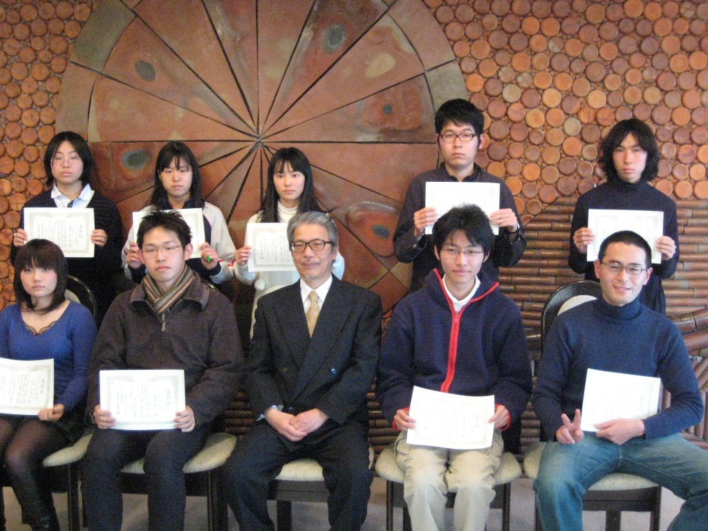

2009年度（第3回）ベストリーダー賞受賞者
|
受賞者リスト
|
| 表彰 |
分 野 |
順位 |
貸出冊数 |
学 科 |
氏 名 |
| 大賞 |
理工系 |
1位 |
994 |
応用数学科 |
紙本 裕一 |
| 2位 |
447 |
応用物理学科 |
藤中 正樹 |
| 3位 |
265 |
電子工学科 |
河本 浩之 |
| 人文・社会科学 |
1位 |
405 |
応用数学科 |
紙本 裕一 |
| 2位 |
98 |
社会情報学科 |
中山 優司 |
| 3位 |
65 |
臨床生命科学科 |
瀧口 香菜美 |
| 文学 |
1位 |
272 |
社会情報学科 |
塩本 逹也 |
| 2位 |
136 |
臨床生命科学科 |
岸根 一樹 |
| 3位 |
130 |
応用数学科 |
紙本 裕一 |
| 新人賞 |
理工系 |
1位 |
119 |
生物地球システム学科 |
北原 優 |
| 2位 |
108 |
動物学科 |
池内 志穂 |
| 3位 |
77 |
動物学科 |
藤本 真衣 |
| 人文・社会科学 |
1位 |
40 |
基礎理学科 |
山口 あゆみ |
| 2位 |
36 |
生物地球システム学科 |
田中 咲帆 |
| 3位 |
35 |
化学科 |
井上 幸治 |
| 文学 |
1位 |
256 |
生物化学科 |
岡本 凌 |
| 2位 |
168 |
社会情報学科 |
山縣 正明 |
| 3位 |
74 |
基礎理学科 |
玉置 みさき |
|
|
Photo (記念撮影)
|
|

|
|
Photo (受賞者)
|
|
|
|
表彰式の様子へ
|
(※ 氏名の公表については、全員の許可をいただいています。)
(※ 許可をいただいた方のみ写真を掲載しています。)
(※ 氏名や写真の無断使用はお止めください。)
|